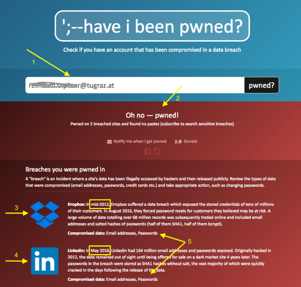

Start with signs, not a guess

Slowdowns, unknown software, account changes, and disabled protection can be warning signs. Consider several clues together.
A compromised device or account may behave differently from normal. The image lists six clues: sudden slowdowns, unfamiliar programs or pop-ups, password changes you did not make, unusual account activity, unexpected antivirus warnings, and security software that has been disabled. You might also notice browser redirects, messages you never sent, or a new sign-in alert. The FTC's malware guide lists similar symptoms and recommends a security scan when they appear.
A single symptom may have an ordinary cause, including updates or many open tabs. Note what changed before assuming a device is infected.
No one sign proves that a hacker is present. A computer may be slow because it is updating, low on storage, or running many browser tabs. A fake “virus detected” pop-up can itself be a scam. Look for a pattern and ask what changed recently: Did you install a program, open an attachment, or approve a login you did not start? Keeping track of those details makes the next check more useful.
Inspect CPU and running processes

Windows Task Manager, Mac Activity Monitor, and Linux process tools show resource use. Sort by CPU and compare processes with what you intentionally opened.
On Windows, press Ctrl + Shift + Esc to open Task Manager. In the Processes view, select the CPU column to sort by usage; you can also inspect memory and disk activity. On a Mac, press Command + Space, type Activity Monitor, and press Return; then open its CPU view. On a GNOME-based Linux desktop, press Super, search for System Monitor, and inspect the process list. Another Linux option is to open a terminal, type top, and press Return. The exact app and launcher can vary by distribution.
A hidden cryptocurrency miner can sustain high CPU use, but legitimate apps can do the same. The Task Manager screenshot is a clue, not a diagnosis.
The screenshot shows a process consuming around 61% of the CPU. A hidden cryptocurrency miner could use a computer's processing power to make money for an attacker; this is called cryptojacking. People sometimes call it a “Bitcoin miner,” although the software may mine another cryptocurrency. It is one possible explanation for sustained high CPU use, but it is far from the only one. A game, video call, browser tab, update, or legitimate security scan can also be demanding. Microsoft's cryptojacking explanation describes the threat, while its Task Manager guide explains the resource view.
Watch whether usage drops after closing familiar applications. Record unfamiliar process names and ask for help before ending system services.
Close programs you recognize and wait a little to see whether the load drops. If an unfamiliar process remains busy, note its exact name and seek help before ending or deleting it. Some unfamiliar names belong to important system services. High usage is a clue to investigate, not proof of infection.
Check whether an account appeared in a known breach

Have I Been Pwned can show whether an email address appeared in known breaches. Review the affected service and change reused passwords.
Have I Been Pwned lets you search an email address for appearances in known data breaches. If the address appears, read which service was affected and what kinds of data were exposed. Change a password used on that service, and change it anywhere else you reused it. Turn on MFA for the affected account and review recent sign-ins. The site's FAQ explains that it aggregates breach data and what a “pwned” result means.
A breach result does not establish that the current device is infected, and no result is not a safety guarantee. Combine the lookup with other checks.
A listed breach does not prove that your current computer is infected, and a “no breach found” result does not prove that every account is safe. The lookup only covers breaches known to the service. Use it alongside your account's own security history, not as a replacement for checking the device. Search only an address you are authorized to check; you do not need to enter an account password into the email lookup.
What to do if the signs add up
Stop sensitive sign-ins on a possibly affected device and run an updated security scan. Ask campus IT before major changes to a managed school device.
Stop using the possibly affected device for sensitive sign-ins until you have checked it. Update your security software and run a full malware scan. On Windows, open Windows Security, choose Virus & threat protection, and use Scan options for a full scan. Follow the tool's instructions if it finds a threat. If your school manages the device, contact campus IT before making major changes.
Secure exposed accounts from a trusted device and review sign-ins, sessions, and financial activity. Keep a clean backup and seek help if removal is uncertain.
From a different trusted device, change passwords for accounts you think may be exposed, enable MFA, review recent sign-ins, and sign out of other sessions where possible. Tell the school help desk if a campus account is affected. If a financial account shows changes you did not make, contact the institution through its official app or number. Keep a clean backup of important coursework, and ask for help before restoring files if you are unsure what was infected. The FTC's removal guidance provides a useful starting sequence.
A cleanup pop-up can be another scam. This sample download link is disabled.
Do not trust a pop-up offering an instant “miracle cleaner”: download the cleaner now.
Sources and further reading
FTC malware guide, Microsoft Task Manager guide, Apple Activity Monitor guide, GNOME System Monitor guide, and Have I Been Pwned FAQ.